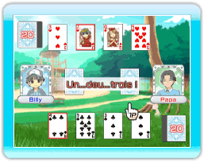

Speed est un jeu de cartes qui teste vos réflexes et votre capacité à réagir rapidement.
- Sépare le jeu de cartes en deux paquets : un rouge et un noir. Chaque personne prend un paquet. (Les jokers ne sont pas utilisés.)
- Place 4 cartes face visible devant toi. Les autres sont placées face cachée dans la pioche.
- Compte "1, 2, 3" et prend une carte de ta pioche. Dépose cette carte sur le paquet.
- Une carte placée au centre doit être juste au dessus ou juste en dessous de la carte actuelle. Les rois et les as se suivent.
- Après avoir placé une carte au milieu, tu prends une carte de la pioche pour remplacer celle que tu as perdu.
- Une fois que les deux joueurs n'ont plus de cartes à déposer, revenez à l'étape 3.
- La première personne qui s'est débarrassée de toutes ses cartes a gagné.